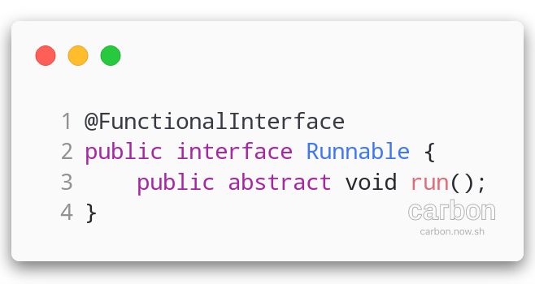
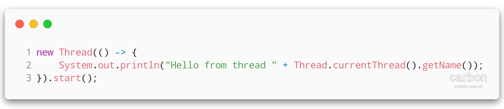
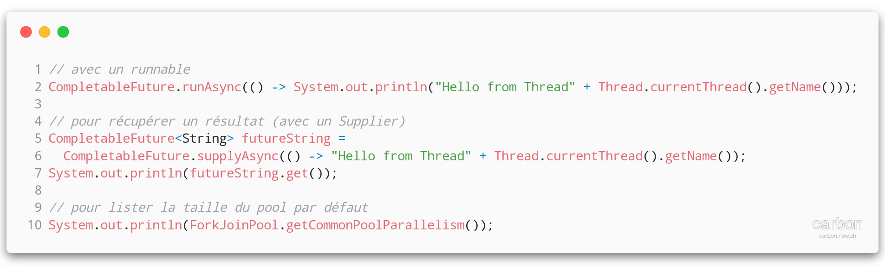
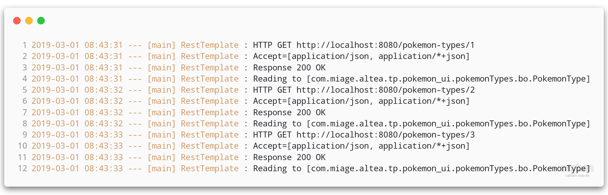
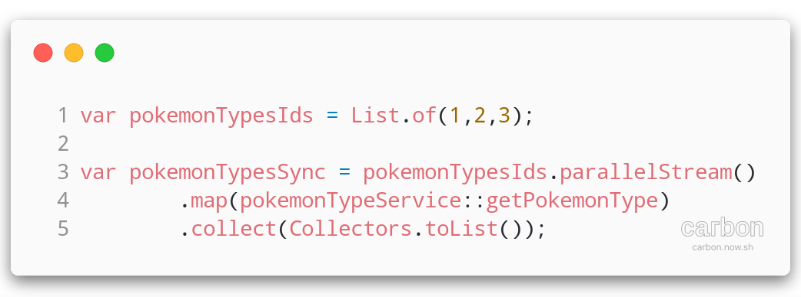
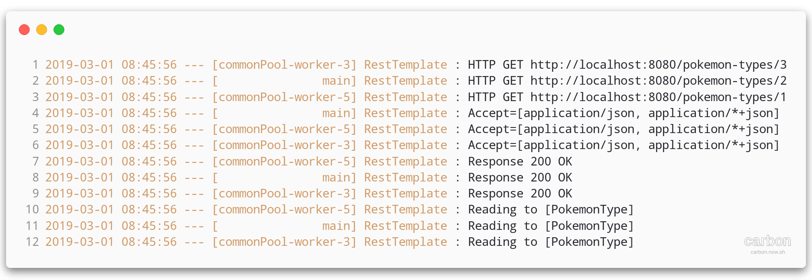

ALOM
⏰ Asynchronism
Problématiques :
Exécuter des traitements longs sans bloquer l'utilisateur ⏱
Exécuter des traitements parallèlement plutôt que séquentiellement
- Envois de mails ✉️
- Impression de documents 🖨
Ne pas bloquer l'utilisateur si l'imprimante n'a plus de papier !
The cost of I/O :

The cost of I/O :
| Action | Latency | # of cycles | Human Time |
|---|---|---|---|
| 1 Cycle CPU (3GHz Clock) | 0.3 ns | 1 | 1 s |
| Level 1 cache access | 0.9 ns | 3 | 3 s |
| Level 2 cache access | 2.8 ns | 9 | 9 s |
| Level 3 cache access | 12.9 ns | 43 | 43 s |
The cost of I/O :
| Action | Latency | # of cycles | Human Time |
|---|---|---|---|
| RAM access | 70 - 100 ns | 233 - 333 | 3.5 - 5.5 m |
| NVMe SSD | 7 - 150 µs | 23k - 500k | 6.5 h - 5.5 d |
| Rotational disk | 1 - 10 ms | 3 - 30 M | 1 - 10 months |
| Internet: SF to NYC | 40 ms | 130 M | 4.2 years |
Concurrence

Comment exécuter plusieurs choses en même temps ?
Le CPU
Un CPU exécute un seul process à la fois
Le système d'exploitation switche entre les process pour leur donner le CPU
Les CPUs multi-coeurs
Exécution de plusieurs process en parallèle
Comment exécuter des choses en parallèle dans un même process ?
Multithreading
Permet l'exécution de plusieurs tâches (threads) dans un même programme
Les threads se partagent la mémoire du process
En Java ☕
Un des premiers langages à rendre le multithreading "facile" pour les développeurs
La gestion du multithreading se fait à l'aide des classes java.util.concurrent.*
Tomcat 😺
- instancie un
Threadjava par connexion HTTP - voyez par vous-même dans votre code:
System.out.println(Thread.currentThread().getName()); - les
Threadssont maintenus en vie dans unpool - le nombre de thread est paramétrable pour booster 🚀 Tomcat (200 par défaut)
- si pas de thread dispo, les requêtes sont 'mises en attente'

- Les beans Spring sont des singletons par défaut!
- La mémoire entre les threads est partagée!
- Ne pas utiliser d'attributs de classe dans un bean spring : les valeurs seraient partagées entre tous les threads/requêtes HTTP !
Instancier des threads
implémenter l'interface Runnable...
Instancier des threads
... en java 8 avec une lambda
⚠️ à bien utiliser la méthode start
la méthode run exécuterait le code donné dans le thread "courant"
Comment récupérer un résultat ?
Future, Callable et ExecutorService
depuis Java ☕ 5 ! (si, si !)
Future<T>représente un résultat asynchroneCallable<T>représente une tâche retournant un résultatExecutorServicegère l'exécution de tâches asynchonesRunnableouCallable<T>
ExecutorService
Exécution d'un Callable
ExecutorService
Exécution de plusieurs Callable

CompletableFuture
depuis Java ☕ 8
CompletableFuture<T>est une Future- Propose des méthodes de chaînage (proche des Promesses en ECMAScript)
- Propose des méthodes
staticpour exécuter desRunnable/CallablesansExecutorService
CompletableFuture
CompletableFuture & Streams
Gérer le chargement asynchrone d'une liste
CompletableFuture
Taille du pool de threads par défaut : Nb CPU - 1
Permet de laisser un CPU disponible au Thread principal et à l'OS
Si un seul CPU dispo, pas de pool de Thread, un Thread sera créé pour chaque tâche
Attention au contexte d'exécution (docker) et à ce pool partagé
Avec les streams Java 8
Possibilité d'exécuter des streams Java en parallèle - Proche de l'asynchronisme
En séquentiel :

Avec les streams Java 8
En synchrone, chaque opération se fait dans le thread principal
Avec les streams Java 8
En parallèle
Avec les streams Java 8
En parallèle, chaque opération se fait dans le pool de thread. Le thread principal assure lui aussi sa part du travail
Quel intéret pour nous?
Je n'ai pas besoin de Threads, Tomcat 😺 est déjà multithreadé
Quel intéret pour nous?
Tomcat alloue un thread pour chaque requête entrante. Nous avons besoin de threads supplémentaires pour :
- Composition d'appels d'API
- Exécution de tâches longues
- Parallélisme au lieu de séquencement

Gain de temps de traitement global !

Fin du cours
Cours suivant :
High-Availability & micro-services patterns